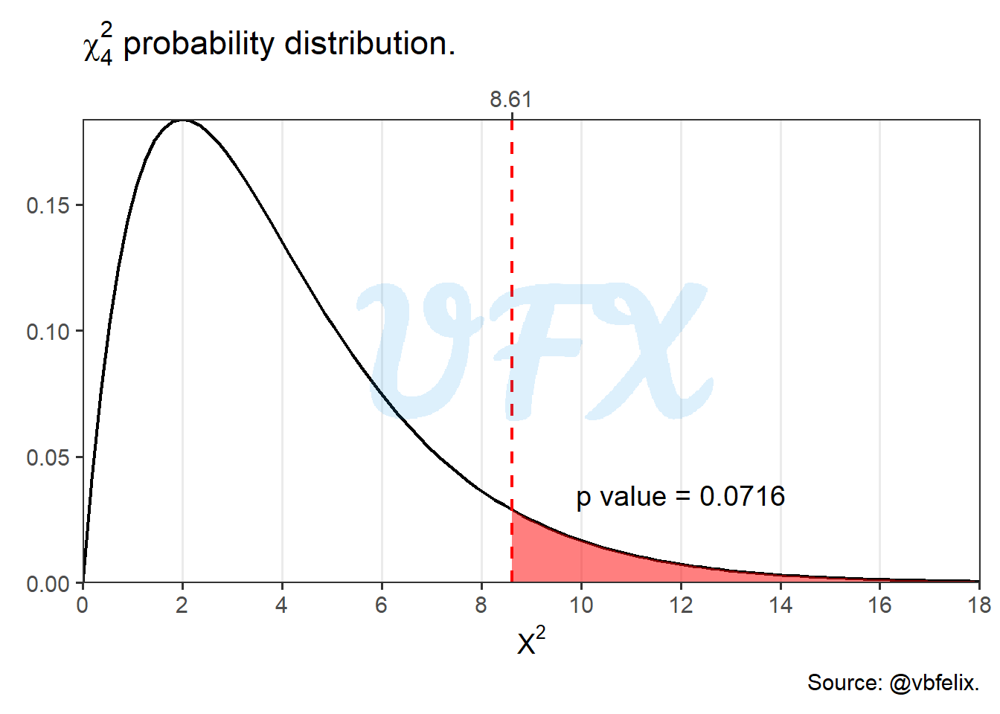

In this post of the series Intro to, I’ll give an introduction to the chi-square test, one of the most well-known statistical tests.
Context
To investigate a probability criterion on any theory of an observed system of errors and to apply it in order to establish a goodness of fit (GoF) measure, Karl Pearson published a paper (Pearson 1900), the reason why the test is also known as Pearson’s chi-square test.
We can test how likely a variable is to come from a specified distribution in this application because we have a metric to check whether or not our observed values are close to or not to the expected values, in this case we can define hypotheses as:
\(H_0:\) The variable follows a specific distribution;
\(H_1:\) The variable does not follow a specific distribution.
Despite Pearson’s primary goal, the chi-square test is most commonly used to test the association or independence of two categorical variables. To do so, we look at how common a particular categorical feature is among two or more groups. So we can establish the hypotheses as:
\(H_0:\) The two variables are independent;
\(H_1:\) The two variables are not independent.
Meaning that the test does not differentiate one variable from another in any causal way.
Math
To begin the math, we will dissect the test statistic, given by the Equation 1:
\[ \begin{equation} X^2 = \sum_{i = 1}^{k} \frac{(O_i - E_i)^2}{E_i}, \end{equation} \tag{1}\]
where:
\(X^2\) is the test statistic;
\(O_i\) is the observed value of the class \(i\);
\(E_i\) is the expected value of the class \(i\);
\(k\) is the total number of classes, i.e., number of combinations of the two variables .
The pre-requisites behind the test are:
Two categorical variables;
Two or more levels for each variable;
The observations are independent, i.e., no paired observations or longitudinal data;
A random sample of size \(n\) where each \(O_i\) falls in one of the \(k\) mutually exclusives classes;
A null hypothesis that with a probability of \(p_i\) that each \(O_i\) belongs to one of the \(k\)’s classes.
So considering the test statistic, Pearson proposed that under a true null hypothesis and an asymptotic \(n\), the test statistic will follow a \(X_{q}^2\) distribution, where \(q\) is the number of degrees of freedom. But how?
The reasoning is that we can describe the observed values following a Binomial distribution, \(O_i \sim Binomial(n,p_i)\), since this distribution describes the phenomenon of the number of sucesses given a total number of trials (\(n\)), where the true success rate is (\(p_i\)), giving this distribution we have that:
\[ \begin{equation} E(O_i) = E_i = np_i, \end{equation} \tag{2}\]
and
\[ \begin{equation} Var(O_i) = np_i(1-p_i). \end{equation} \tag{3}\]
Given a sample size that is sufficient large, we can use a result of the central limit theorem (Pearson 1900; Cam 1986) that gives us that:
\[ \begin{equation} Z = \frac{Y-\mu}{\sqrt{\sigma^2}} \longrightarrow \mathcal{N}(0,1), \end{equation} \tag{4}\]
where:
\(Y\) is the sum of random independent and identically distributed variables, with the same mean and variance;
\(\mu\) is the mean;
\(\sigma^2\) is the variance;
\(\mathcal{N}\) is a normal distribution.
So applying the approximation of the normal to a binomial distribution:
\[ Binomial(n,p_i) \approx N(np_i,np_i(1-p_i)). \tag{5}\]
Now, if we square a random variable \(Z_1\) that follows a standard normal distribution \(\mathcal{N}(0,1)\), we have that:
\[ Z_1^2 = \chi_1^2, \tag{6}\]
and if we sum two squared variables, such as \(Z_1\) and \(Z_2\):
\[ Z_1^2 + Z_2^2 = \chi_2^2. \tag{7}\]
Then,
\[ \sum_{i = 1}^{q} Z_i^2 = \chi_q^2, \tag{8}\]
Now using Equation 4 and Equation 5 we can write that:
\[ \begin{align} Z &= \frac{Y-\mu}{\sqrt{\sigma^2}} \\ &= \frac{O_i - np_i}{\sqrt{np_i(1-p_i)}}. \\ \end{align} \tag{9}\]
So having a variable \(X_1 = Z^2\), we apply the results from Equation 8 and Equation 9 :
\[ \begin{align} Z^2 &= \left[ \frac{Y-\mu}{\sqrt{\sigma^2}} \right]^2 \\ &= \left[ \frac{O_1 - np_1}{\sqrt{np_1(1-p_1)}} \right]^2 \\ &= \frac{ (O_1 - np_1) ^2}{(\sqrt{np_1(1-p_1)})^2} \\ &= \frac{ (O_1 - np_1) ^2}{np_1(1-p_1)} \\ &= \frac{ (O_1 - np_1) ^2}{np_1(1-p_1)} \times[(1-p_1)+p_1] \\ &= \frac{ (O_1 - np_1) ^2(1-p_1)}{np_1(1-p_1)} + \frac{ (O_1 - np_1)^2(p_1)}{np_1(1-p_1)} \\ &= \frac{ (O_1 - np_1)^2}{np_1} + \frac{ (O_1 - np_1)^2}{n(1-p_1)}. \\ \end{align} \tag{10}\]
Considering now a second variable, \(X_2\), where:
\[ X_1 = n - X_2 \longrightarrow X_2 = n-X_1, \tag{11}\]
and,
\[ p_1 = 1- p_2 \longrightarrow p_2 = 1 - p_1. \tag{12}\]
We apply the Equation 11 and Equation 12 to Equation 10 and continue our desmonstration:
\[ \begin{align} Z^2 &= \frac{ (O_1 - np_1)^2}{np_1} + \frac{ (O_1 - np_1)^2}{n(1-p_1)} \\ &= \frac{ (O_1 - np_1)^2}{np_1} + \frac{ [(n - O_2)- n(1-p_2)]^2}{n(p_2)} \\ &= \frac{ (O_1 - np_1)^2}{np_1} + \frac{ [n - O_2- n+np_2]^2}{np_2} \\ &= \frac{ (O_1 - np_1)^2}{np_1} + \frac{ [-O_2+np_2]^2}{np_2} \\ &= \frac{ (O_1 - np_1)^2}{np_1} + \frac{ [-(O_2-np_2)]^2}{np_2} \\ &= \frac{ (O_1 - np_1)^2}{np_1} + \frac{ (O_2-np_2)^2}{np_2} \\ &= \frac{ (O_1 - E_1)^2}{E_1} + \frac{ (O_2-E_2)^2}{E_2} \\ &= \sum_{i=1}^{2}\frac{ (O_i - E_i)^2}{E_i}. \\ \end{align} \tag{13}\]
So we show that the sum of chi-squared variables results in the same formula as the test statistic, as shown in Equation 1.
Lastly, since we can also rewrite our statistic in Equation 1, using Equation 2:
\[ \begin{align} &= \sum_{i = 1}^{k} \left[ \frac{(O_i - E_i)^2}{E_i} \right] \\ & = \sum_{i = 1}^{k} \left[ \frac{O_i^2}{E_i} - \frac{E_i^2}{E_i} \right] \\ & = \sum_{i = 1}^{k} \left[ \frac{O_i^2}{E_i} - E_i \right] \\ & = \sum_{i = 1}^{k} \left[ \frac{O_i^2}{E_i} \right] - \sum_{i = 1}^{k}\left[ E_i \right] \\ & = \sum_{i = 1}^{k} \left[ \frac{O_i^2}{E_i} \right] - \sum_{i = 1}^{k}\left[ n\times p_i \right] \\ & = \sum_{i = 1}^{k} \left[ \frac{O_i^2}{E_i} \right] - n\sum_{i = 1}^{k}\left[ p_i \right] \\ & = \sum_{i = 1}^{k} \left[ \frac{O_i^2}{E_i} \right] - n. \\ \end{align} \tag{14}\]
Example
Introduction
After all of these equations, we’ll perform a real-world example.
Let’s say we have 200 animals in our random sample, and we want to see if race has anything to do with frame size. In order to see our observed values in each class, i.e., race x frame, we will first look at a contingency table with the absolute frequency of animals:
| Frame | Race 1 | Race 2 | Race 3 | Frame Total |
|---|---|---|---|---|
| Small | 10 | 20 | 10 | 40 |
| Medium | 20 | 30 | 20 | 70 |
| Large | 30 | 50 | 10 | 90 |
| Race Total | 60 | 100 | 40 | 200 |
Test statistic
To compute our statistic, as given by the equation Equation 1, we have to:
Compute the expected value for each class (cell in terms of a contingency table);
Compute the component \(\frac{(O_i -E_i)^2}{E_i}\) fo each class;
Compute the \(X^2\) statistic by summing all values of step 2.
To begin, we will perform the calculus for a single cell to demonstrate each step, and we will select the Race 1 x Small frame class. In this case, our observed value is 10, so we do the following to calculate the expected value:
\[ E_1 = (40 \times 60)/200 = 12. \tag{15}\]
We multiplied our marginal results and divided them by our sample size because one of our assumptions is that the variables are independent. We can now compute the component for the first cell using our expected value.
\[ \begin{align} & = \frac{(O_1 - E_1)^2}{E_1} \\ & = \frac{(10 - 12)^2}{12} \\ & = \frac{(-2)^2}{12} \\ & = \frac{4}{12} \\ & = 1/3.\\ \end{align} \tag{16}\]
Now we apply the calculus to each cell, computing the expected value for every class:
| Frame | Race 1 | Race 2 | Race 3 |
|---|---|---|---|
| Small | 12 | 20 | 8 |
| Medium | 21 | 35 | 14 |
| Large | 27 | 45 | 18 |
And then we can also compute \(\frac{(O_i -E_i)^2}{E_i}\) for each one:
| Frame | Race 1 | Race 2 | Race 3 |
|---|---|---|---|
| Small | 0.33 | 0 | 0.50 |
| Medium | 0.05 | 0.71 | 2.57 |
| 0.33 | 0.56 | 3.56 |
Lastly, we sum all the values to obtain the statistic \(X^2\), which is equal to 8.61.
p-value
Now, if we want to obtain the p value we have to look at the chi-sqaure distribution, so first we need to obtain the number of degrees of freedom \((q)\), in this cases that is given by:
\[ q = (n_r-1)\times(n_c-1), \tag{17}\]
where
\(n_r\) is the number of rows in the contingency table, i.e., the number of levels of the respective categorical variable;
\(n_c\) is the number of columns in the contingency table, i.e., the number of levels of the respective categorical variable.
Then, we have in our example that
\[ \begin{align} q & = (n_r-1)\times(n_c-1) \\ & = (3-1) \times (3-1) \\ & = (2) \times (2) \\ & = 4.\\ \end{align} \tag{18}\]
With an established \(q\), we now can compute the p value given by:
\[ P(\chi_4^2 > X^2|H_0), \tag{19}\]
or the probability that a value is larger than \(X^2\) given a \(\chi_4^2\) distribution and a true null hypothesis, as we can see in the figure below:
With a p value of 0.0716, we have that the p value is greater than 0.05, so we do not reject the null hypothesis, i.e., we do not have sample evidence to reject the null hypothesis that race and size frame are independent..
In practice with R
In real life we are not going to do all of this calculations step by step, let’s how we can use R to help us.
Contingency table
If you have your contingency table ready, an easy and quick way to apply the test is to create a matrix with the observed values of each class.
#matrix with the count
data <- matrix(data = c(10,20,30,20,30,50,10,20,10),ncol = 3)
data [,1] [,2] [,3]
[1,] 10 20 10
[2,] 20 30 20
[3,] 30 50 10chisq.test(data)
Pearson's Chi-squared test
data: data
X-squared = 8.6111, df = 4, p-value = 0.07159We can see that the function already show us the statistic, number of degrees of freedom and the p value.
Raw data
We usually work with raw data as data analysts, where each row represents one observation. In this case, we can transform our data to perform the same function as in the previous example.
library(tidyr)
library(dplyr)
#Raw data simulation
data <-
expand_grid(
race = c(1:3),
frame = factor(c("S","M","L"))
) %>%
arrange(race,frame) %>%
mutate(n = c(10,20,30,20,30,50,10,20,10)) %>%
uncount(n)
data# A tibble: 200 x 2
race frame
<int> <fct>
1 1 L
2 1 L
3 1 L
4 1 L
5 1 L
6 1 L
7 1 L
8 1 L
9 1 L
10 1 L
# ... with 190 more rowsdata %>%
#Number of observed values for each class
count(race,frame) %>%
#Pivot table to make a contingency table
pivot_wider(names_from = race,values_from = n) %>%
#Removal of the variable as column
select(-1) %>%
#Chi-square test
chisq.test()
Pearson's Chi-squared test
data: .
X-squared = 8.6111, df = 4, p-value = 0.07159References
Cam, L. Le. 1986. “The Central Limit Theorem Around 1935.” Statistical Science 1 (1). https://doi.org/10.1214/ss/1177013818.
Pearson, Karl. 1900. “X. On the Criterion That a Given System of Deviations from the Probable in the Case of a Correlated System of Variables Is Such That It Can Be Reasonably Supposed to Have Arisen from Random Sampling.” The London, Edinburgh, and Dublin Philosophical Magazine and Journal of Science 50 (302): 157–75. https://doi.org/10.1080/14786440009463897.